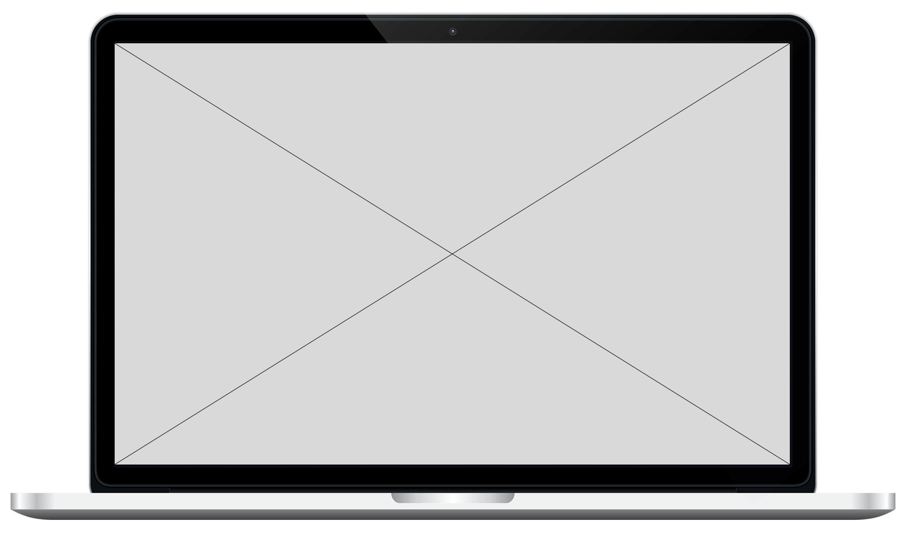

<section id="projects" class="projects sec-pad">
    <div class="main-container">
      <h2 class="heading heading-sec heading-sec__mb-bg">
        <span class="heading-sec__main">Projects</span>
        <span class="heading-sec__sub">
          Here you will find some of the personal and clients projects that I
          created with each project containing its own case study
        </span>
      </h2>

      <div class="projects__content">

        <div class="projects__row_left">
          <div class="projects__row-img-cont">
            
          </div>
          <div class="projects__row-content">
            <h3 class="projects__row-content-title">Portfolio</h3>
            <p class="projects__row-content-desc">
              Dopefolio is a successful Open-Source project that I created which have been featured on
              some of the biggest tech sites like CSS-Tricks, Hostinger, etc &amp; used by thousands of developers globally
            </p>
            <a class="btn btn--med btn--theme dynamicBgClr" href="/project-1" target="_blank">En savoir plus</a>
          </div>
        </div>

        <div class="projects__row_right">
            <div class="projects__row-content">
                <h3 class="projects__row-content-title">Odysee Spatiale</h3>
                <p class="projects__row-content-desc">
                  Wilsonport is a multiservice logistics and transport company and
                  I created their website from scratch using the frontend tools I
                  know.
                </p>
                <a class="btn btn--med btn--theme dynamicBgClr" href="/project-2" target="_blank">En savoir plus</a>
              </div>
          <div class="projects__row-img-cont">
            
          </div>
        </div>
      </div>
    </div>
  </section>